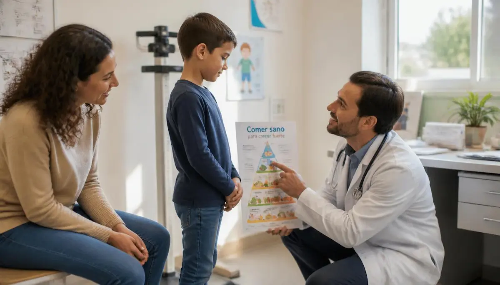
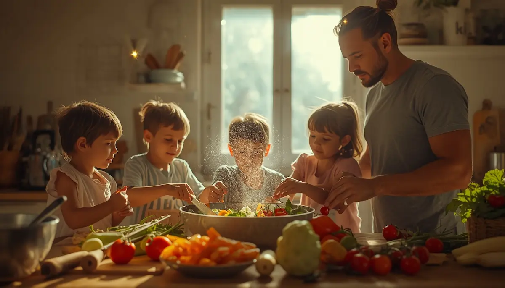
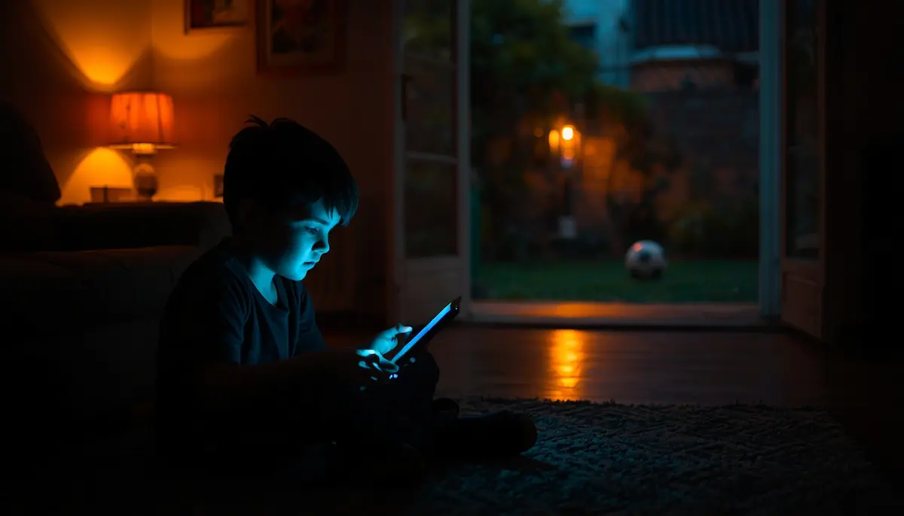
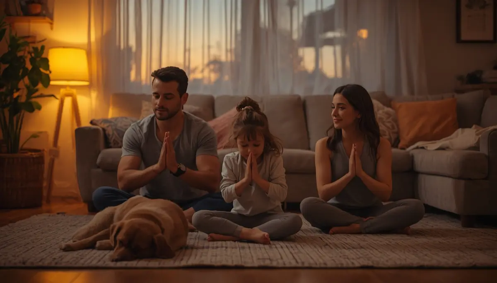

Creciendo en salud: comprendiendo la obesidad infantil
Hablar de peso y salud en la infancia requiere tacto, respeto y cero culpa. He querido reunir aquí una guía amable para entender que los hábitos de vida se construyen desde el cariño, el movimiento y la cocina de verdad, alejándonos de dietas estrictas y centrando la mirada en el bienestar global del niño. Pincha en cada tarjeta para profundizar en cada tema.

Mirar sin juzgar
El sobrepeso infantil no es un problema de falta de voluntad, sino una señal para cuidar el entorno. Abordemos el tema desde la empatía, protegiendo siempre la autoestima del menor.
Descubrir más ➔
¿Qué nos dice el equilibrio energético?
Entender cómo el cuerpo utiliza la energía nos ayuda a enfocar la salud como un todo: la nutrición, el descanso nocturno y la actividad diaria van de la mano.
Descubrir más ➔
Detectar con calma y sin prisas
Observar pequeños cambios en el ritmo diario o en la ropa nos invita a consultar con el pediatra de confianza para trazar pautas de bienestar adaptadas a su crecimiento.
Descubrir más ➔
Cocina real y cultura de movimiento
Volver a los alimentos frescos y transformar el ejercicio en un juego al aire libre son las mejores herramientas para que los niños crezcan fuertes y vitales.
Descubrir más ➔
Frenar el sedentarismo digital
Reducir las horas frente al televisor o la tableta abre la puerta al aburrimiento creativo, el juego físico y un descanso nocturno mucho más reparador.
Descubrir más ➔Integración social y seguridad
Cuidar que el colegio sea un espacio seguro, libre de burlas o comentarios sobre el físico, fortalece la confianza del niño en sus relaciones con los demás.
Descubrir más ➔
Un cambio que arropa a todos
Los niños imitan lo que ven en casa. Construir hábitos saludables en familia, sin aislar al menor con menús diferentes, es la clave del éxito a largo plazo.
Descubrir más ➔Cuidar el vínculo y la alegría
La felicidad de un niño va mucho más allá de una cifra en la báscula. Prioricemos la estabilidad emocional, el afecto y una relación sana con la comida y el propio cuerpo.
Descubrir más ➔